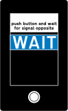

4003.6: Instructions at a Toucan crossing
Drawn UNVERIFIED timing Animated in use, but no flash rate is recorded in the atlas data. No playback is shown, so a rate is not invented. Drawn from the cited SI diagram (Reviewer-graded OK or awaiting grade).
Instructions at a Toucan crossing


| Id | 4003.6 |
|---|---|
| Name | Instructions at a Toucan crossing |
| Category | Signs |
| Group | PedHead |
| Diagram | 4003.6 |
| Row status | current |
| SI caption | (a) instructions to pedestrians , drivers of electric scooters being used in a trial and cyclists above the push button control for calling up pedestrian and cycle phases at a Toucan crossing; or (b) instructions to cyclists above the push button control for calling up cycle phases at a crossing controlled by the traffic light signals provided for at item 3 or 4 |
| SI ref | Sch 14 Pt 2 |
| Family | PedHead |
| Chapter | 20 |
| Mount | SignalHead |
| Colours | blue, white, black |
| Dimensions (m) | plate_height 0.832, plate_width 0.513, post_diameter 0.09, underside 2.1, verge_offset 0.8 |
| OSM tag | traffic_sign=GB:4003.6 |
| Face source | GOV.UK EPS (Crown copyright, OGL v3.0), converted locally by the atlas |
| Diagram ref / source page | SI 2016/362 Sch 14 Pt 2, diagram 4003.6 (printed p457 = tsrgd2016.pdf PDF p458), 400 dpi, page rotated 90 deg clockwise to read (table printed sideways): plate silhouette and symbol layers traced by colour (generator b12); legends in stand-in lettering at measured positions |
| Licence | OGL-3.0 |
- Face: GOV.UK traffic sign image, © Crown copyright (Department for Transport), used under the Open Government Licence v3.0 (https://www.nationalarchives.gov.uk/doc/open-government-licence/version/3/); converted from the EPS by the atlas. The atlas's own procedural face is shown after it as the offline fallback.